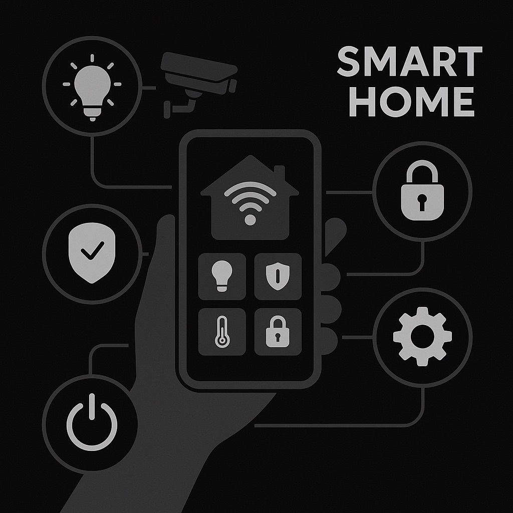
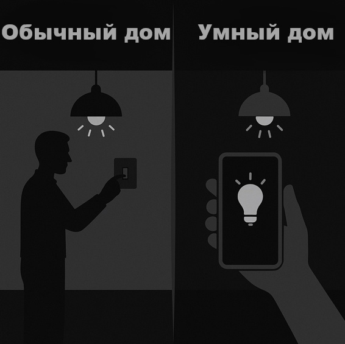
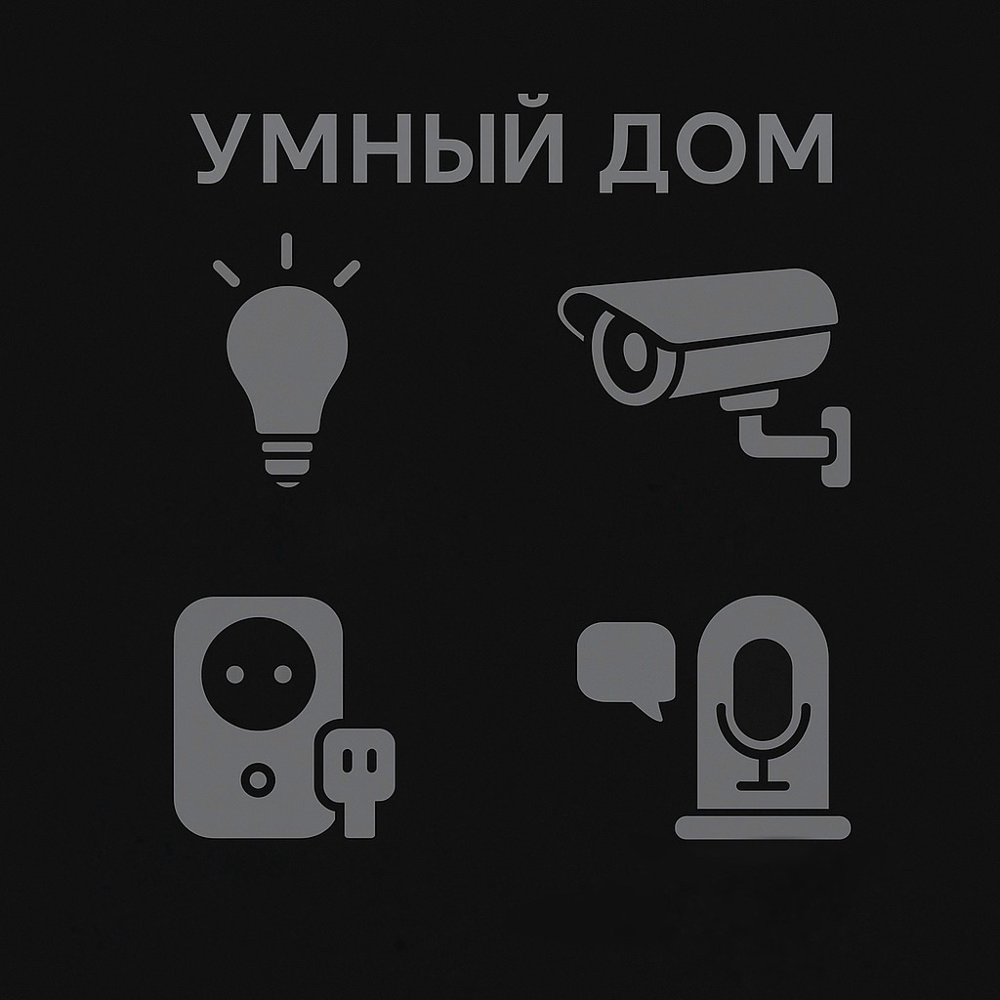
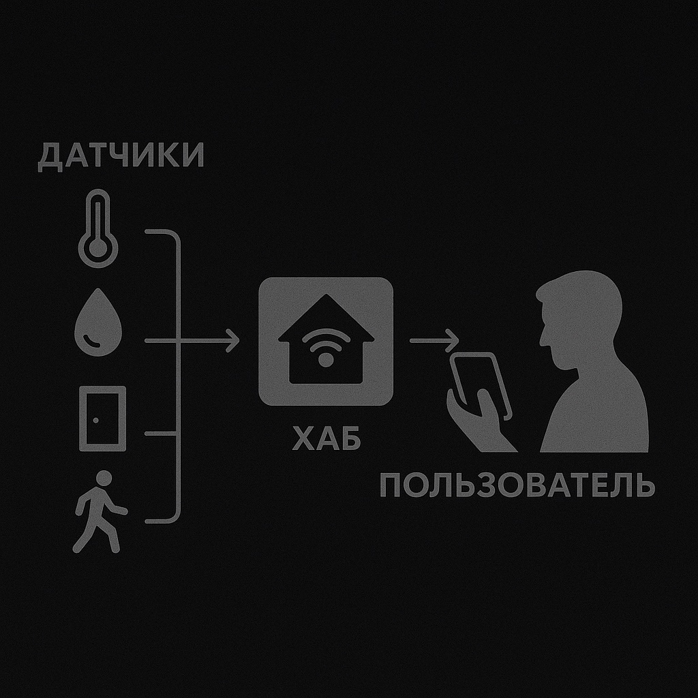
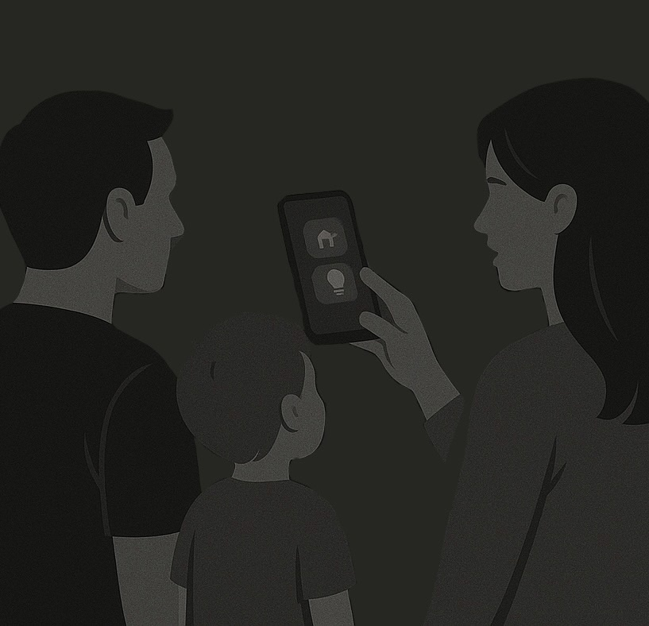
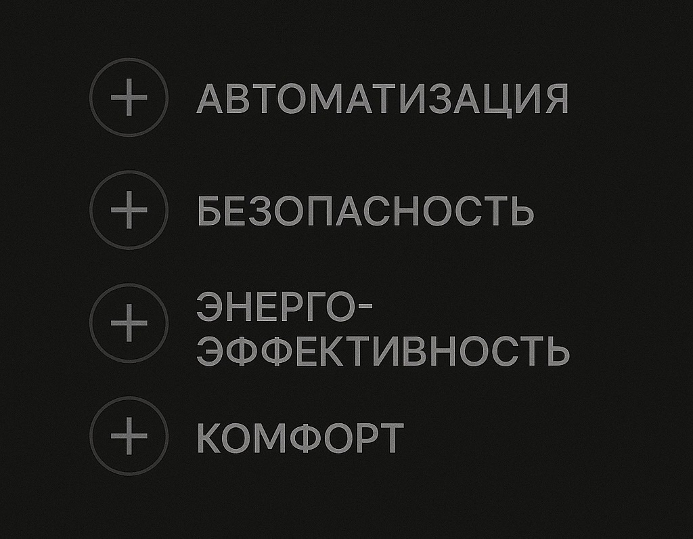
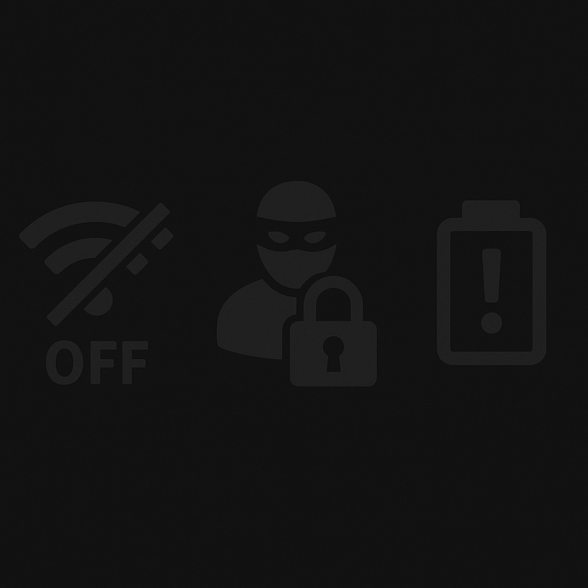

Что такое умный дом?
Умный дом-комплекс устройств, подключенных к интернету. Система помогает контролировать освещение, аудио и видеосистемы, а также следить за безопасностью. Управление умным домом может осуществляться со смартфона, планшета и т. д.

Зачем нужен умный дом?
Безопасность.
Доступность.
Комфорт.
Экономия энергии.

Основные компоненты
Умные лампы
Камеры видеонаблюдения
Датчики движения
Умные розетки
Голосовые ассистенты

Как это работает
Устройства соединяются через Wi-Fi и
управляются через мобильное приложение или голос.

Примеры использованият
Свет включается по движению
Камеры присылают уведомления
Установка температуры перед приходом домой

Преимущества

Риски и недостатки
Зависимость от интернета
Возможные сбои
Проблемы безопасности данных

Умный дом — это шаг к цифровому будущему. В дальнейшем — ещё больше автоматизации